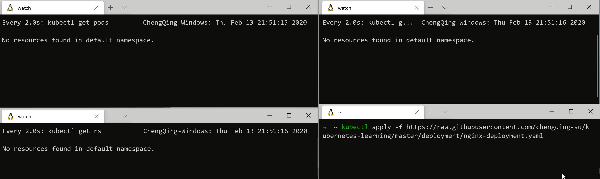
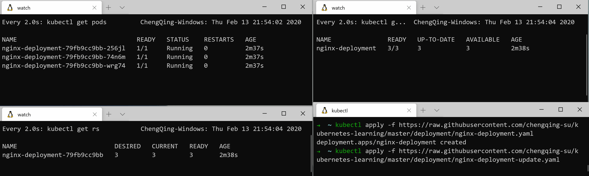
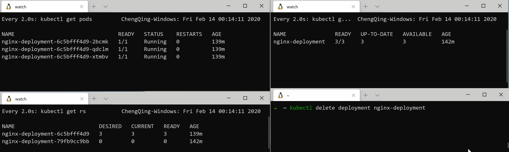

Deployment为Pod和ReplicaSets提供了声明性更新（简单理解，就是直接使用kubectl apply更新ReplicaSets中的Pod配置）。
一个简单的示例
在该实例中，将部署3个版本为1.16的nginx. 示例地址：https://raw.githubusercontent.com/chengqing-su/kubernetes-learning/master/deployment/nginx-deployment.yaml
1 | apiVersion: apps/v1 |
创建一个新的Deployment
使用声明式的方式去部署一下上面的示例：
1 | kubectl apply -f https://raw.githubusercontent.com/chengqing-su/kubernetes-learning/master/deployment/nginx-deployment.yaml |
过程 & 结果：

可以看到的是，在上述的部署过程中，有一个名为nginx-deployment-79fb9cc9bb的ReplicaSet被创建，还有以nginx-deployment-79fb9cc9bb为前缀的Pod被创建。
更新一个的Deployment
我将上面示例中nginx的版本升级到了1.17。并创建了一个新的manifests，其地址为https://raw.githubusercontent.com/chengqing-su/kubernetes-learning/master/deployment/nginx-deployment-update.yaml。
使用声明式的方式去部署一下上面的示例：
1 | kubectl apply -f https://raw.githubusercontent.com/chengqing-su/kubernetes-learning/master/deployment/nginx-deployment-update.yaml |
过程 & 结果：

可以看到的是，在上述的部署过程中，有一个名为nginx-deployment-6c5bfff4d9的ReplicaSet被创建，开始的时候里面只有一个Pod，然后逐渐增加到3，同旧的ReplicaSet管理的pod数量逐渐减少，直至为0。
在上述的manifest中我都没有指定其部署策略，Deployment会默认选择RollingUpdate作为其部署策略。目前Deployment支持两种部署策略：RollingUpdate 和 Recreate，可以通过.spec.strategy.type来选择部署策略。
Q: 当我们完成了一次更新后，旧的ReplicaSet nginx-deployment-79fb9cc9bb，为什么还会存在？
这取决于我们配置的清除策略，Deployment默认保留10个的ReplicaSet。我们可以通过.spec.revisionHistoryLimit字段来指定我希望保留ReplicaSet的数量。
命令式管理Deployment
不推荐使用命令式的方式去维护一个Kubernetes资源，其操作无法被版本化，无法存储到版本库中。因此下面的内容只是简单介绍。
回滚
还可以通过命令式的方式去更新一个Deployment，比如：
1 | kubectl set image deployment.v1.apps/nginx-deployment nginx=nginx:1.17 --record=true |
使用--record可以把这次改动记录到资源上。
可以使用kubectl rollout history查看资源的历史版本。
再通过kubectl rollout undo将资源回滚到上一个版本或者指定版本。
伸缩
有两种伸缩机制：
第一种是比较简单扩展Pod的数量到指定的数量。比如将上面的3增加到10。
1 | kubectl scale deployment.v1.apps/nginx-deployment --replicas=10 |
还有一种就是自动伸缩，它可以根据一些指标来对Deployment进行动态的伸缩，比如根据CPU的使用率。
1 | kubectl autoscale deployment.v1.apps/nginx-deployment --min=10 --max=15 --cpu-percent=80 |
删除一个Deployment
执行删除命令：
1 | kubectl delete deployment nginx-deployment |
过程 & 结果：
